Ознакомление с основными типами элементов динамической памяти, их характеристиками, конструктивными типами модулей памяти. Изучение технологии защиты памяти от сбоев.
При изучении информационной части работы следует рассмотреть общий принцип построения динамических ОЗУ, особенности различных типов динамической памяти, определить их характеристики. Исследовать особенности конструктивного исполнения модулей памяти. Также следует рассмотреть вопросы, связанные с обеспечением надежной работы подсистемы памяти.
В практической части требуется выполнить исследования с помощью программных пакетов Aida64 и SiSoftware Sandra. Указанные пакеты располагаются в каталоге "Soft". С целью получения доступа ко всем функциям программных приложений запуск исполнимых файлов должен производиться от имени администратора.
Для представления результатов выполнения заданий в указанных пакетах программ рекомендуется максимально использовать табличные формы. В случае необходимости представления результатов в графическом виде возможно использовать "скриншот", оставляя в нем существенную информацию.
Практические задания состоят в следующем:
1.2.1. С помощью программного пакета Aida64 получить информацию об оперативной памяти. Для этого выполнить:
- меню "Компьютер" → "DMI" → "Массивы памяти" → "Системная память";
- меню "Компьютер" → "DMI" → "Устройства памяти" → "DIMM 1...4";
- меню "Системная плата" → "Память";
1.2.2. С помощью программного пакета Aida64 оценить производительность данной подсистемы. Для этого выполнить:
- меню "Тест" → "Чтение из памяти / Запись в память / Копирование в памяти / Задержка памяти". В отчет следует включить результаты по исследуемому компьютеру, двум смежным с ним в рейтиновой таблице, двум с максимальным и минимальным результатами;
- меню "Сервис" → "Тест кэша и памяти".
1.2.3. С помощью программного пакета SiSoftware Sandra провести тестирование подсистемы памяти посредством набора имеющихся тестов:
- пункт "Memory Bencmark".
Отчет по работе должен содержать:
Провести оценку производительности данной подсистемы. С этой целью необходимо:
- определить пропускную способность подсистемы памяти с разными типами данных и пропускную способность при работе с данными различных объемов, выполнив "Тест пропускной способности памяти" и "Тест кэша и памяти";
- определить рейтинг производительности исследуемой подсистемы основной памяти.
Начиная изучение архитектур оперативной памяти, в первую очередь следует определить факторы ее производительность. Было бы естественным назвать таким фактором ее пропускную способность, т.е. количество мегабайт в секунду, которое способна считать (записать) оперативная память. Пропускная способность оперативной памяти напрямую зависит от частоты работы чипов памяти и от ширины шины, связывающей память и процессор, и обычно определяется как произведение ширины шины на ее тактовую частоту. Например, при ширине шины 64 бита и частоте 100 МГц, пропускная способность составит 8 байт (64 бита) * 100 МГц = 800 Мбайт/с.
Пропускная способность - не единственный фактор, определяющий производительность подсистемы памяти. Важнейшим параметром также является время доступа, т.е. временная задержка между запросом на выдачу какой-либо информации из памяти и ее реальной выдачей. При этом возникает неободимость выбора памяти с малой задержкой и низкой пропускной способностью или с большой задержкой и высокой пропускной способностью. Однозначного ответа на этот вопрос нет. Если конкретная программа работает с большими массивами непрерывных данных, т.е. лишь однажды получает доступ, а затем много линейно считывает, то для такой программы оптимальна память с большой пропускной способностью, а если программа оперирует малыми блоками данных, т.е. постоянно получает доступ к разным областям памяти и понемногу читает из каждой области, то оптимальна память с малым временем доступа, а пропускная способность имеет меньшее значение. Так как обычно на компьютере исполняются разные приложения, то очень трудно найти компромисс. В общем случае необходимо стремиться к достижению компромисса между временем доступа и пропускной способностью памяти.
В самых первых PC в качестве оперативной памяти использовалась так называемая DRAM (Dynamic RAM). Ячейки памяти в микросхеме DRAM - это миниатюрные конденсаторы. Биты кодируются наличием или отсутствием заряда. Основная проблема такой организации памяти в необходимости регенерации, так как в противном случае заряды с конденсаторов "стекают" и данные будет потеряны. Регенерация происходит, когда контроллер памяти системы (встроенный обычно в чипсет) берет перерыв и обращается ко всем строкам данных в микросхеме памяти. Регенерация занимает время работы системы, при этом процессор фактически ждет, ничего полезного не делая. Чем быстрее происходит регенерация, тем меньше процессорного времени теряется и тем производительнее система.
В DRAM для хранения одного бита данных используется только один транзистор и один конденсатор, поэтому технология DRAM позволяет производить достаточно компактные чипы с немалой емкостью. Например, сегодня существуют чипы, базирующиеся на технологии DRAM емкостью 512 Мбит, т.е. они содержат полмиллиарда транзисторов. Для сравнения, в современных процессорах количество транзисторов измеряется десятками миллионов. Но структура чипа DRAM весьма проста, представляя собой двумерную матрицу, в отличие от сложной архитектуры современного процессора. Таким образом, основное достоинство динамической памяти - большая емкость при малых физических размерах чипа и невысокая цена.
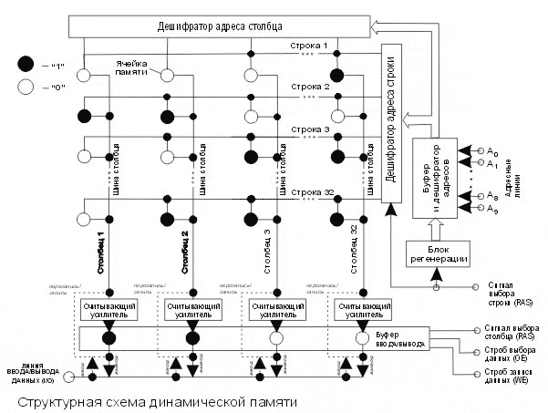
Ячейки памяти организованы в матрицу, состоящую из строк и столбцов. Полный адрес ячейки данных включает два компонента — адрес строки (row) и адрес столбца (column). На рисунке представлена матрица, состоящая из 32 строк и 32 столбцов, то есть из 1024 ячеек.
Когда ЦПУ (или устройство, использующее канал DMA) обращается к памяти для чтения информации, на входы микросхемы поступает строб вывода данных ОЕ (Output Enabled), затем подается адрес строки и одновременно с ним (или с задержкой) сигнал RAS (Row Address Strobe). Это означает, что каждая шина столбца соединяется с ячейкой памяти выбранной строки. Адрес ячейки поступает по адресным линиям (в нашем случае их десять) на дешифратор, который преобразует поступивший набор нулей и единиц в номер строки. Емкость конденсатора очень мала (доли пикофарады) и его заряд тоже мал, поэтому используется усилитель, подключенный к каждой шине столбца динамической памяти. Информация считывается со всей строки запоминающих элементов одновременно и помешается в буфер ввода-вывода.
С незначительной задержкой после сигнала RAS на входы динамической памяти подается адрес столбца и сигнал CAS (Column Address Strobe). При чтении данные выбираются из буфера ввода-вывода и поступают на выход динамической памяти в соответствии с адресом столбца.
При считывании информации из ячеек памяти происходит ее разрушение, поэтому производится перезапись считанной информации: выходы регистра строки снова соединяются с общими шинами столбцов памяти, чтобы перезаписать считанную информацию из строки. Если ячейка имела заряд, то она снова будет заряжена еще до завершения цикла чтения. На ячейки, которые не имели заряда, напряжение не подается.
Если выполняется запись в память, то подается строб записи WE (Write Enable) и информация поступает на соответствующую шину столбца не из буфера, а с входа памяти в соответствии с адресом столбца. Таким образом, прохождение данных при записи задается комбинацией сигналов, определяющих адрес столбца и строки, а также сигналом разрешения записи данных в память.
К настоящему времени разработано несколько разновидностей динамической памяти. Наиболее широко распространенными из них являются:
Первой, нашедшей применение в PC модификацией DRAM, была память, которая работала в так называемом быстром страничном режиме и ее принято называть FPM DRAM (Fast Page Mode DRAM) или просто FPM. Чтобы сократить время ожидания на выборку данных (на доступ) стандартная DRAM разбивается на страницы. Обычно для доступа к данным в памяти требуется указать строку и столбец адреса, что занимает некоторое время. Разбиение на страницы обеспечивает более быстрый доступ ко всем данным в пределах данной строки памяти, т.е. если изменяется лишь номер столбца, но не номер строки.
Страничная организация памяти - простая схема повышения эффективности, в соответствии с которой память разбивается на страницы от 512 байт до нескольких килобайт. Соответствующая схема обращения позволяет в пределах страницы уменьшить количество состояний ожидания.
Чтобы увеличить скорость доступа к памяти был разработан так называемы пакетный (burst) режим доступа. Преимущества пакетного режима доступа проявляются тогда, когда доступ к памяти является последовательным (т.е. считывание происходит последовательно одно за другим из соседних ячеек). После задания строки и столбца и считывания информации, к следующим трем соседним адресам можно обращаться без дополнительных циклов ожидания. Однако доступ в таком пакетном режиме ограничивается лишь четырьмя операциями чтения-записи, затем необходимо снова полностью адресоваться к строке и столбцу.
Принято говорить о схеме синхронизации доступа в пакетном режиме в виде x-y-y-y, где х - количество тактов ожидания для произведения чтения первого адреса, а затем y - количество тактов ожидания для чтения каждого следующего адреса в пакетном режиме.
Архитектура DRAM такова, что для получения доступа первый раз необходимо 5 тактов ожидания. Если не разбивать память на страницы и не пользоваться пакетным режимом доступа, то каждая следующая операция получения доступа к следующей ячейке памяти тоже будет занимать 5 тактов ожидания. Однако если пользоваться разбиением на страницы и режимом burst, то, получив доступ первый раз, потратив на это 5 тактов ожидания, содержимое следующих ячеек можно считать, потратив на это лишь три такта ожидания, т.е. в режиме FPM схема доступа имеет вид не 5-5-5-5, как у обычной DRAM, а 5-3-3-3. В этом и преимущество памяти типа FPM перед обычной DRAM. Т.е. использование памяти типа FPM позволяет при той же частоте работы чипов памяти увеличить производительность обмена за счет сокращения времени на получение доступа к памяти.
Начиная с 1995 года, в PC используется новый тип оперативной памяти - EDO (Extended Data Out). Это усовершенствованный тип памяти FPM, у него было еще одно название, которое сейчас не используется Hyper Page Mode. Микросхемы памяти EDO учитывают перекрытие синхронизации между очередными операциями доступа. За счет этого удается частично совместить по времени следующий цикл чтения с предыдущим, т.е. чипсет при работе с EDO памятью может начать выполнение новой команды выборки столбца, пока данные считываются по текущему адресу, за счет чего еще уменьшаются задержки на получение доступа.
Для оперативной памяти EDO схема синхронизации в пакетном режиме имеет вид 5-2-2-2, т.е. на четырех операциях считывания тратится не 14, а 11 тактов. Т.е. налицо явный прирост производительности, в то время как стоимость чипов типа EDO лишь немного отличалась от чипов FPM.
Рассмотренные выше архитектуры являются вариантами оригинальной DRAM, отличаясь схемой доступа в пакетном режиме, что обеспечивало соответствующий прирост производительности. Частоты, на которых функционировала память перечисленных типов примерно таковы: DRAM функционировала с частотой 4,77 МГц (в первых PC) до 10-12 МГц. Затем применялась память типа FPM, ее частота функционирования составляла 10-40 МГц в 386 системах, 25-50 МГц в 486 системах и 50-66 МГц в Pentium системах. Память типа EDO применялась наряду с FPM в 486 и Pentium системах на аналогичных частотах.
Улучшение идеологии построения чипов памяти, приведшее к разработке новых типов архитектур (в рамках DRAM), в каждой новой архитектуре применяется новая схема работы с памятью, приводящая к уменьшению задержек при получении доступа и планомерное увеличение тактовой частоты работы памяти. При этом нужно отметить, что увеличение тактовой частоты памяти увеличивает не только пропускную способность (линейно), но и уменьшает время доступа.
Выше время доступа было представлено как количество тактов ожидания, соответствующих задержке перед получением доступа. Однако реальная задержка измеряется в единицах времени, а не в абстрактных тактах. Величина одного такта определяется тактовой частотой, на которой работает память. Чем больше тактовая частота, тем меньше время одного такта, и, следовательно, тем меньше время доступа. Если, к примеру, память работает на частоте 100 МГц, то время одного такта 1/100 млн = 10 нс, и 5 тактов ожидания соответствуют задержке в 50 нс, то при частоте работы памяти 133 МГц время одного такта 7,5 нс, а задержка в 5 тактов равна 37,5 нс.
Начиная с 1997 года, на смену памяти типа FPM и EDO пришел новый тип оперативной памяти - SDRAM (Synchronous DRAM - синхронная DRAM). Эффективность SDRAM намного выше ее предшественников. Во-первых, дело в том, что схема пакетного чтения у SDRAM намного эффективнее, чем у EDO или FPM и описывается формулой 5-1-1-1. Т.е. для считывания четырех значений подряд задержка для памяти типа FPM составит 5+3+3+3=14 тактов, у EDO 5+2+2+2=11 тактов, а у SDRAM 5+1+1+1=8 тактов.
Далее, SDRAM более технологична, чем ее предшественники, и ее проще изготовить для работы на более высоких частотах. И если впервые SDRAM применяли в PC на частоте 66 МГц (как и EDO и FPM в то время), то затем были разработаны чипы SDRAM, работающие на частоте 100 МГц, а после и 133 МГц.
Начиная с 1999 года, Intel продвигала на рынок принципиально новый тип памяти - DR DRAM (Direct Rambus DRAM), который был разработан по ее заказу небольшой исследовательской фирмой Rambus. Аналогичный тип памяти уже использовался в игровых приставках (в популярной модели Nintendo 64).
Обычные типы памяти (FPM/RDO и SDRAM) иногда называют системами с широким каналом. Ширина канала памяти равна ширине шины данных процессора (в системах Pentium - 64 бит). Максимальная производительность памяти DIMM SDRAM PC100 составляет 100x8 (частота х количество передаваемых данных за один такт), или 800 Мбайт/с. Микросхемы RDRAM увеличивают пропускную способность памяти — в них предусмотрена 16-разрядная шина передачи данных, частота увеличена до 800 МГц, а пропускная способность равна 1,6 Гбайт/с. Для увеличения производительности можно используются двух- и четырехканальные RDRAM. которые позволяют увеличить скорость передачи данных до 3,2 или 6,4 Гбайт/с соответственно.
Один канал памяти Rambus принципиально может поддерживать до 32 отдельных устройств RDRAM (микросхем RDRAM), которые устанавливаются в модули RIMM (Rambus Inline Memory Modules). Вся работа с памятью организуется между контроллером памяти и отдельным (а не всеми) устройством. Каждые 10 нс (100 МГц) одна микросхема RDRAM может передавать 16 байт. RDRAM работает быстрее SDRAM приблизительно в три раза. Для увеличения производительности было предложено еще одно конструктивное решение: передача управляющей информации отделена от передачи данных по шине. Для этого предусмотрены независимые схемы управления, а на адресной шине выделены две группы контактов: для команд выбора строки и столбца и для передачи данных по фронтам тактового сигнала, т.е. дважды в тактовом импульсе (практически в режиме DDR). Правая граница тактового импульса называется четным циклом, а левая — нечетным. Синхронизация осуществляется с помощью передачи пакетов данных в начале четного цикла. Максимальное время ожидания составляет 2,5 нс.
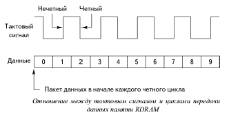
На рисунке показано отношение между тактовым сигналом и циклами передачи данных. Пять полных циклов тактового сигнала соответствуют десяти циклам данных.
DDR SDRAM (от англ. Double Data Rate Synchronous Dynamic Random Access Memory — синхронная динамическая память с произвольным доступом и удвоенной скоростью передачи данных) — тип компьютерной памяти, используемой в вычислительной технике в качестве оперативной и видеопамяти. Пришла на смену памяти типа SDRAM.
DDR SDRAM по многим параметрам и способам изготовления мало чем отличается от обычной SDRAM: та же синхронизация шины памяти с системной шиной, практически то же производственное оборудование, энергопотребление, почти не отличающееся от SDRAM, площадь чипа больше лишь на несколько процентов. Это позволило сразу без значительных материальных и временных издержек создать новую быстродействующую память, причем по цене, мало отличающейся от обычной SDRAM (DDR SDRAM иногда называют SDRAM-II).
Так как DDR SDRAM основывается на обычной SDRAM, то она имеет сопоставимые латентные характеристики, и поэтому зачастую работает быстрее своего конкурента - RDRAM, у которой как раз имеются ощутимые проблемы с латентностью.
При использовании DDR SDRAM достигается удвоенная скорость работы, нежели в SDRAM, за счёт считывания команд и данных не только по фронту, как в SDRAM, но и по спаду тактового сигнала. За счёт этого удваивается скорость передачи данных без увеличения частоты тактового сигнала шины памяти. Таким образом, при работе DDR на частоте 100 МГц мы получим эффективную частоту 200 МГц (при сравнении с аналогом SDR SDRAM). В спецификации JEDEC[1] есть замечание, что использовать термин «МГц» в DDR некорректно, правильно указывать скорость «миллионов передач в секунду через один вывод данных».
Специфическим режимом работы модулей памяти является двухканальный режим.
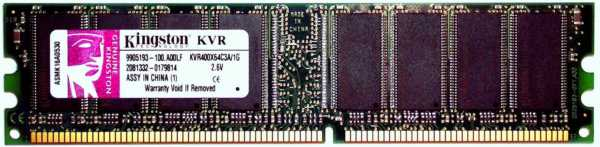
При сохранении тех же размеров модуля число контактов увеличилось со 168 до 184. Изменившееся положение ключа не позволит вставить модули DIMM DDR SDRAM в разъемы DIMM, предназначенные для обычной SDRAM-памяти.
В отличие от спецификаций на SDRAM, в название которых входила тактовая частота шины памяти, маркетинговые отделы компаний, разрабатывавших DDR SDRAM, в рекламных целях избрали ту систему названий, которая позволила получить максимальную цифру - они выбрали пиковую пропускную способность в мегабайтах и получили PC1600 для 100 МГц, PC2100 для 133 МГц и PC2700 для 166 МГц DDR SDRAM (аналогичное мы можем наблюдать и для Direct Rambus DRAM, где цифры в названии означают результирующую частоту, то есть реальную частоту, умноженную на 2).
Стандарт модулей DIMM DDR SDRAM предполагает использование чипов на скорости до 200 MГц с результирующей частотой 400 МГц и пропускной способностью 3,2 ГБ/с - как у двухканальной Direct Rambus DRAM. Однако уже появились двухканальные чипсеты для работы с DDR SDRAM - это дает производительность 4,2 МГц при использовании модулей PC2100.
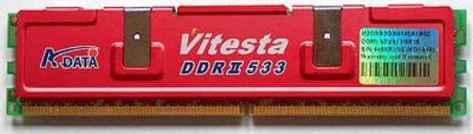
Конструктивно новый тип оперативной памяти DDR2 SDRAM был выпущен в 2004 году. Основываясь на технологии DDR SDRAM, этот тип памяти за счёт технических изменений показывает более высокое быстродействие и предназначен для использования на современных компьютерах. Память может работать с тактовой частотой шины 200, 266, 333, 337, 400, 533, 575 и 600 МГц. При этом эффективная частота передачи данных соответственно будет 400, 533, 667, 675, 800, 1066, 1150 и 1200 МГц. Некоторые производители модулей памяти помимо стандартных частот выпускают и образцы, работающие на нестандартных (промежуточных) частотах. Они предназначены для использования в разогнанных системах, где требуется запас по частоте. Время полного доступа — 25, 11,25, 9, 7,5 нс и менее. Время рабочего цикла — от 5 до 1,67 нс.
| Тип чипа | Частота памяти, МГц | Частота шины, МГц | Эффективная (удвоенная) скорость, млн. передач/с |
|---|---|---|---|
| DDR2-400 | 100 | 200 | 400 |
| DDR2-533 | 133 | 266 | 533 |
| DDR2-667 | 166 | 333 | 667 |
| DDR2-800 | 200 | 400 | 800 |
| DDR2-1066 | 266 | 533 | 1066 |
Для использования в ПК, DDR2 RAM поставляется в модулях DIMM с 240 контактами и одним ключом (прорезью в полосе контактов). DIMM’ы различаются по максимальной скорости передачи данных (часто называемой пропускной способностью).
| Название модуля | Частота шины, МГц | Тип | Пиковая скорость передачи данных, МБ/с |
|---|---|---|---|
| PC2-3200 | 200 | DDR2-400 | 3200 |
| PC2-4200 | 266 | DDR2-533 | 4200 |
| PC2-5300 | 333 | DDR2-667 | 5300 |
| PC2-5400 | 337 | DDR2-675 | 5400 |
| PC2-5600 | 350 | DDR2-700 | 5600 |
| PC2-5700 | 355 | DDR2-711 | 5700 |
| PC2-6000 | 375 | DDR2-750 | 6000 |
| PC2-6400 | 400 | DDR2-800 | 6400 |
| PC2-7100 | 444 | DDR2-888 | 7100 |
| PC2-7200 | 450 | DDR2-900 | 7200 |
| PC2-8000 | 500 | DDR2-1000 | 8000 |
| PC2-8500 | 533 | DDR2-1066 | 8500 |
| PC2-9200 | 575 | DDR2-1150 | 9200 |
| PC2-9600 | 600 | DDR2-1200 | 9600 |
DDR3 SDRAM (англ. double-data-rate three synchronous dynamic random access memory) — синхронная динамическая память с произвольным доступом и удвоенной скоростью передачи данных, третье поколение) — это тип оперативной памяти, используемой в вычислительной технике в качестве оперативной и видеопамяти. Пришла на смену памяти типа DDR2 SDRAM, увеличив размер предподкачки с 4 бит до 8 бит.
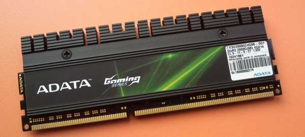
Этот тип памяти основан на технологиях DDR2 SDRAM со вдвое увеличенной частотой передачи данных по шине памяти. Отличается пониженным энергопотреблением по сравнению с предшественниками. Частота полосы пропускания лежит в пределах от 800 до 2400 МГц (рекорд частоты — более 3000 МГц), что обеспечивает большую пропускную способность по сравнению со всеми предшественниками.
| Стандартное название | Частота памяти, МГц | Время цикла, нс | Частота шины, МГц | Эффективная (удвоенная) скорость, млн. передач/с | Название модуля | Пиковая скорость передачи данных при 64-битной шине данных в одноканальном режиме, МБ/с |
|---|---|---|---|---|---|---|
| DDR3-800 | 100 | 10,00 | 400 | 800 | PC3-6400 | 6400 |
| DDR3-1066 | 133 | 7,50 | 533 | 1066 | PC3-8500 | 8533 |
| DDR3-1333 | 166 | 6,00 | 667 | 1333 | PC3-10600 | 10667 |
| DDR3-1600 | 200 | 5,00 | 800 | 1600 | PC3-12800 | 12800 |
| DDR3-1866 | 233 | 4,29 | 933 | 1866 | PC3-14900 | 14933 |
| DDR3-2133 | 266 | 3,75 | 1066 | 2133 | PC3-17000 | 17066 |
| DDR3-2400 | 300 | 3,33 | 1200 | 2400 | PC3-19200 | 19200 |
DDR4 SDRAM (англ. double-data-rate four synchronous dynamic random access memory) — новый тип оперативной памяти, являющийся эволюционным развитием предыдущих поколений DDR. Отличается повышенными частотными характеристиками и пониженным напряжением питания.
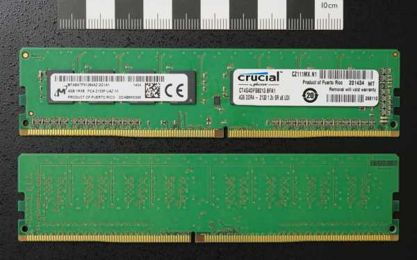
Основное отличие DDR4 от предыдущего стандарта DDR3 заключается в удвоенном до 16 числе банков (в 2 группах банков, что позволило увеличить скорость передачи. Пропускная способность памяти DDR4 в перспективе может достигать 25,6 ГБ / c (в случае повышения максимальной эффективной частоты до 3200 МГц). Кроме того, повышена надёжность работы за счёт введения механизма контроля чётности на шинах адреса и команд. Изначально стандарт DDR4 определял частоты от 1600 до 2400 МГц с перспективой роста до 3200 МГц.
В массовое производство вышла во 2 квартале 2014 года, сперва только ECC-память, а в следующем квартале начались продажи и не-ECC модулей DDR4, вместе с процессорами Intel Haswell-E/Haswell-EP, требующими DDR4.
Для расчёта максимальной пропускной способности памяти DDR4 необходимо её эффективную частоту умножить на 64 бита (8 байт), то есть размер данных, который может быть передан за 1 такт работы памяти. Таким образом:
Нужно учитывать, что из-за временных ограничений по взаимодействию с микросхемами памяти реальная пропускная способность меньше на 5—10 % от рассчитанной выше.
Современные материнские платы поддерживают многоканальные режимы работы памяти. Таким образом, итоговая эффективная пропускная способность памяти системы будет равняться пропускной способности DDR4, умноженной на количество используемых каналов.
Изначально предполагалось, что для работы DDR4 на максимальных частотах (3200 МГц) потребуется использование лишь одного модуля памяти DDR4 на канал передачи данных (прямое подключение напрямую к контроллеру с топологией "точка-точка"). При работе на меньших частотах, например 1866 и 2133 МГц, контроллеры памяти некоторых процессоров, в частности, Skylake (2015), могут использовать до 2 модулей памяти на канал. Для серверных систем используются модули RDIMM DDR4 и ожидается появление модулей LRDIMM DDR4, использующих буферные микросхемы вблизи контактов модуля. Такая память сможет устанавливаться в количестве до 3 модулей на канал, при использовании совместимых платформ.
В самые первые персональные компьютеры память устанавливали непосредственно чипами. Такой подход имеет ряд недостатков. Во-первых, установка множества чипов памяти на материнскую плату неэффективна с точки зрения использования свободного места; во-вторых, каждый устанавливаемый чип содержит много гибких контактов, таким образом понижается надежность, так как отсутствие контакта хотя бы у одного чипа приводит к неработоспособности всей системы.
Чипы памяти стали размещать на так называемых модулях памяти, которые устанавливались в материнскую плату в специальные разъемы. Модули помогают решить обе описанные выше проблемы: обычно они устанавливаются в материнскую плату вертикально, что позволяет решить проблему свободного места, во вторых, между модулем памяти и разъемом обычно надежный электрический контакт.
Разработан ряд модулей памяти. Некоторые (SIMM 30 pin, SIMM 72 pin, DIMM 168 pin) из них повсеместно применялись ранее и являются на данный момент устаревшими. Другие (RIMM, DIMM DDR) широко распространены в настоящее время и являются перспективными.
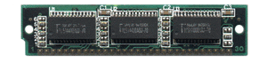
Первым модулем, который использовался в PC, был так называемый модуль SIMM 30pin (Single Inline Memory Module - модуль памяти с односторонним расположением контактов), имевший 30 контактных площадок. Рассмотрев такой модуль, можно заметить, что контактные площадки расположены у модуля в обеих сторон, но с обратной стороны модуля за счет внутренней металлизации контактных площадок происходит их дублирование, т.е. все же у модуля одностороннее расположение контактов.
Параметром, непосредственно характеризующим модуль, является его разрядность, т.е. ширина шины, по которой происходит доступ к конкретному модулю, или количество контактов, по которым передаются биты данных. Разрядность модуля SIMM 30 pin составляет 8 бит (на самом деле 9 бит, т.к. девятый бит используется для передачи данных четности). Модуль SIMM 30 pin (иногда еще называют "короткий SIMM") использовался в системах на базе процессоров 286, 386 и 486.
В качестве примера можно рассмотреть шину, связывающую 386-й процессор с памятью. Разрядность шины - 32 бита. В системе должна использоваться 32-битная память. Для того, чтобы ее реализовать, нужно использовать несколько модулей одновременно. Фактически, минимальной единицей оперативной памяти системы можно считать совокупность модулей памяти, полностью "закрывающих" шину память - процессор. В таком компьютере нужно одновременно использовать модули памяти в количестве, кратном четырем. Совокупность разъемов, полностью закрывающих шину память-процессор, называют банком памяти.
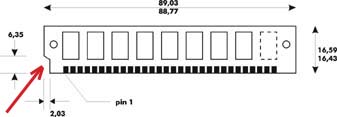
Модуль имеет ключ - вырез сбоку со стороны 1-го контакта, который служит для его правильной ориентации.
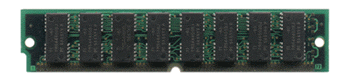
Новый тип модуля SIMM 72 pin был призван устранить неудобства использования 30 pin SIMM. Он так же имел контакты, расположенные с одной стороны модуля (Single Inline) и при этом увеличившееся количество контактных площадок позволило сделать ширину шины модуля 32 бит (на самом деле 36 бит, остальные - для данных четности). Таким образом, в системах на базе 486, у которых ширина шины процессор-память составляла 32 бита, банком памяти являлся единственный модуль памяти SIMM 72 pin. Поэтому, в 486 системы можно было устанавливать либо по 4 SIMM 30 pin, либо по одному SIMM 72 pin (который иногда называли длинный SIMM).
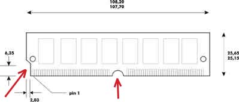
Этот модуль имеет 2 ключа - аналогичный 30 pin SIMM вырез со стороны 1-го контакта, а также вырез посередине между 36-м и 37-м.
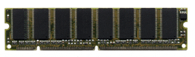
С выходом процессора Pentium, у которого ширина шины память - процессор увеличивается до 64 бит, снова возникает ситуация, когда банк не равен модулю. В Pentium-системы память при использовании 72pin SIMM снова необходимо устанавливать парами. Для решения этой проблемы, а точнее для применения уже упоминавшейся нами SDRAM, был разработан новый тип модуля: DIMM 168 pin (Dual Inline Memory Module). Как ясно из названия, у этого модуля 168 контактных площадок, расположенных по обеим сторонам модуля, по 84 с каждой стороны. Модуль DIMM 168 pin является 64-битным, и использование единственного модуля DIMM позволяет закрыть шину память - процессор для процессора Pentium, как, впрочем, и для любого современного процессора. Таким образом, в современную систему можно вставлять модули DIMM 168 pin по одному или 72pin SIMM парами. 30 pin SIMM уже весьма давно полностью вышли из употребления, длинные же SIMM сегодня применяются крайне редко. Наиболее часто используемый тип модуля - DIMM.
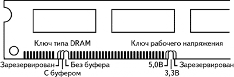
Модуль DIMM 168 pin имеет 2 ключа - 2 выреза "внутри гребенки" - между 10 и 11 и между 40 и 41 пинами (поскольку всего на одной стороне 84 пина, положение явно асимметрично и, соответственно, определяет 1-й пин. Эти ключи, кроме того что служат для правильной ориентации модуля, ещё и несут определенную информацию своим расположением - первый ключ различает модули с буферизацией и без нее, второй ключ говорит о напряжении питания модуля.
Как известно, в микросхемах DRAM ячейкой, в которой хранится информация, является конденсатор. Вследствие этого, одновременно с информационной емкостью модулей памяти растет и емкость электрическая. Известно также, что постоянная времени конденсатора прямо пропорциональна емкости. В результате, по мере роста емкости модулей памяти им требуется все больше времени, чтобы воспринять сигнал от контроллера. Соответственно, если банально наращивать емкость модулей памяти при существующем контроллере, рано или поздно "запаздывание" модуля достигнет такого значения, что нормальная совместная работа двух устройств станет невозможной.
Проблема была осознана примерно к моменту появления 168-контактных DIMM, и при разработке контроллеров для систем с этими модулями было предложено следующее решение - контроллер общается с DRAM не напрямую, а через микросхему, именуемую буфером, которая сама по себе имеет низкую емкость, и, соответственно, способна мгновенно принимать сигнал от контроллера, освобождая системную шину. Дальнейшая зарядка ячеек DRAM идет уже без участия контроллера. Сам по себе буфер представляет собой дополнительную микросхему, размеры которой, в принципе, могут быть разными, но обычно меньше, чем чипы собственно памяти.
Однако прежде, чем 168-контактные DIMM прочно вошли в обиход, произошло еще одно событие - появились и стали легкодоступны микросхемы с рабочим напряжением 3,3 В. Но т.к. время зарядки конденсатора пропорционально также и напряжению, таким образом, снижение напряжения несколько сняло остроту проблемы.
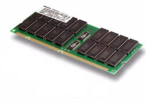
К моменту массовой разработки контроллеров памяти для DIMM-ориентированных систем индустрия оказалась полностью дезориентированной, в результате, в компьютерах разных производителей могут применяться DIMM практически любой комбинации буферизованность/напряжение. Насколько можно судить, небуферизованные модули не работоспособны в системах, предназначенных для модулей буферизованных, и наоборот (в действительности установить DIMM с "неверной буферизацией" не позволяет наличие ключа). SDRAM DIMM в буферизованном исполнении не встречаются, однако была разработана аналогичная буферу конструкция и для них. Она носит название register, а соответствующие модули - registered.
Модули DIMM SDRAM маркируются следующим образом: PCxxx, где ххх - частота, на которой сертифицирован работать модуль. Существует всего 3 спецификации DIMM SDRAM:
Естественно модули, предназначенные для более высоких частот, могут без проблем применяться и на низших частотах.
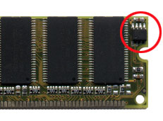
Также, в спецификации PC100, фирмой Intel было оговорено обязательное наличие на модулях памяти микросхемы SPD (Serial Presence Detect, выделена на рисунке) - это микросхема энергонезависимой памяти, в которой хранятся характеристики микросхем памяти и информация о производителе модуля. Эта информация необходима для правильной конфигурации подсистемы памяти. Однако некоторые модули "безымянных" производителей иногда не снабжались этой микросхемой, что приводило к сбоям в работе с некоторыми материнскими платами.
Следует четко различать типы памяти (DRAM, FPM, EDO, SDRAM etc) и модули памяти (SIMM30, SIMM72, DIMM168).
Теперь поговорим о модулях памяти, которые стали для фирмы Intel в своё время ошибкой. Intel заключил c Rambus договор о партнерстве, обязавшись во всех своих чипсетах поддерживать только DR DRAM в случае, если пропускная способность памяти в системе выше, чем 1000 Мбайт/с, и этот договор действовал в течение 2-х лет! В обмен на это Rambus должен был обеспечить Intel высокоскоростной шиной памяти. Intel эта сделка стоила огромных денег (около $5млрд.),позже Intel понняли, как неверно было заключить такой договор. Дело в том, что у Intel было около 90% рынка чипсетов летом 1999, летом 2000 - 40%, потому, что Intel не имел права предлагать решения с доступным и дешевым 133 МГц SDRAM (133 МГц х 8 байт ширина шины = 1066 Мбайт/с > 1000), а предлагал решения на совсем не более быстром (из-за более высоких задержек при обращении) DR DRAM, притом, что цена на память типа DR DRAM была в 7-8 раз выше. Фактически Intel сам связал себя по рукам и ногам в выпуске чипсетов, по сути частично утратив контроль над этим рынком.
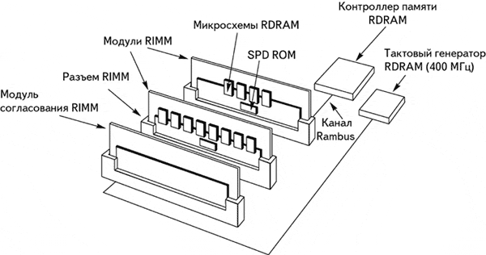
Подсистема памяти Rambus представляет из себя непрерывный канал, что приводит к необходимости заполнения всех разъемов, установленных на плате. Поэтому были также выпущены так называемые CRIMM (Continuiti RIMM) - специальные модули, единственное назначение которых - продолжить электрические связи в канале памяти. Эти модули не имеют микросхем памяти, и обычно идут в комплекте с материнскими платами.
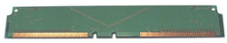
Как показала практика, на таких высоких частотах в системе памяти возникают проблемы с 3-м модулем, поэтому Intel используют не более 2 модулей на канале Rambus.
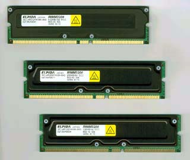
Позже (в июне 2002 г.) было объявлено о выпуске новых двухканальных 32-битных RDRAM модулей стандарта PC800, массовое производство которых началось в четвертом квартале 2002 года. Новые 232-контактные модули RIMM3200 имеют тактовую частоту 400МГц и максимальную скорость передачи данных 3,2 Гб/с. Модули выпускались емкостью 128, 256 и 512 МБ.
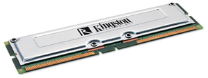
Было объявлено также о выпуске модулей RIMM4200 (PC1066), работающих, соответственно, на частоте 1066 МГц.
Модули RIMM маркируются рабочей частотой: PC600, PC700, PC800 и PC1066 - модули RIMM DR DRAM, работающие на частотах соответственно 600 (300DDR) , 700 (350DDR) , 800 (400DDR) и 1066 (533DDR) МГц, и имеющие пропускную способность соответственно: 1200 Мбайт/с, 1400 Мбайт/с, 1600 Мбайт/с, 2100 Мбайт/с.
На сегодняшний день DR DRAM присутствует на рынке достаточно времени, чтобы цена на эти модули памяти упала, а никакой массовой популярности не приобрел и, вероятно, не приобретет в дальнейшем, т.к. фирма Intel постепенно отказывается в своих новых чипсетах от DR DRAM в пользу DDR SDRAM.
В качестве метода выявления сбоев в оперативной памяти применялась так называемая память с контролем четности.
Контроль четности - довольно старый метод проверки сохраняемых в памяти данных на отсутствие ошибок. Вкратце метод заключается в том, что при записи данных в память для некоторого количества (как правило, 8) бит данных вычисляется контрольная сумма (т.е. двоичная сумма значений всех бит, от которой потом отбрасываются старшие разряды), которая сохраняется вместе с данными в виде бита четности. При считывании данных контрольная сумма вычисляется еще раз и сравнивается с битом четности. Если они совпадают, то данные считаются истинными, в противном случае генерируется сообщение об ошибке четности, которое приводит к остановке компьютера.
Данный метод имел определенный смысл на сравнительно ранней стадии развития PC, когда подсистема памяти была одним из самых ненадежных мест во всей системе, а компьютеры выполняли в основном ответственные задачи. Собственно достоинством метода являлось то, что если память компьютера была ненадежна, то его владелец мог определить это по частым остановкам системы ввиду ошибки четности и принять меры по замене памяти.
Со временем надежность памяти ощутимо выросла, операционные системы стали многозадачными, пользовательский интерфейс - графическим; наконец, операционные системы стали выполнять тесты памяти при загрузке. В этой ситуации стали особенно заметны недостатки памяти с четностью, а именно:
1. По оценкам специалистов, среднее время между сбоями доброкачественной памяти (статистически от сбоев не застрахован никто) сопоставимо со временем жизни компьютера. В этой ситуации платить за дополнительные чипы четности (стоимость которых составляет десятки процентов стоимости основной памяти) кажется расточительством.
2. Малозначительный сбой ведет за собой полную остановку системы и возможную потерю ценной информации (что особенно обидно в многозадачной среде).
3. К потере информации может привести ошибка в бите четности.
4. Метод никак не застрахован от двойных ошибок (одновременное изменение значений двух бит не влияет на контрольную сумму).
Логические операции над данными могут, вообще говоря, потребовать лишних тактов ожидания.
В результате, примерно в 1994 году стал происходить постепенный отход от использования "простой" схемы контроля четности. Подавляющее большинство настольных систем отказалось от контроля четности вообще, а в серверах стали применять более прогрессивный, с точки зрения сохранности данных, метод ECC. Для модернизации старых систем, требовавших память с контролем четности, на рынке появилась "логическая четность". В настоящее время схема обычного контроля четности практически не применяется.
Как раз для работы с битами четности и использовался 9-й бит в SIMM 30pin и 33-36 биты в SIMM 72pin.
Логическая четность (logic parity, известна также под названием bridge parity, parity emulation, наиболее правдивое название fake parity - "ложная четность") - техническое решение, впервые примененное в 1994-1995 году. В это время происходил массовый переход индустрии PC на более дешевую память без четности. Обделенными при этом чувствовали себя владельцы еще относительно новых на тот момент 486-х компьютеров, подсистема памяти которых не позволяла использовать такое решение, в результате чего они без особой на то необходимости были вынуждены использовать дорогостоящую четность. Для них и была предназначена четность логическая.
В рамках контроля четности для группы бит, записываемых в память, контроллер вычисляет контрольную сумму и записывает ее в виде специального бита четности. При считывании данных контрольная сумма вычисляется снова и сравнивается с хранящейся в бите четности, при совпадении двух сумм данные считаются верными. Необходимость хранения битов четности и удорожала всю систему. Модули с логической четностью вообще не имеют чипов четности, зато имеют логический чип, который при считывании данных сам вычисляет "контрольную" сумму и предъявляет ее контроллеру, как если бы эта сумма сохранялась в модуле. Понятно, что эта сумма всегда совпадает с той, которую вычислит сам контроллер, таким образом, фактически контроль четности отсутствует. Цена логической микросхемы по сравнению с чипами четности исчезающе мала, так что главную задачу - экономию - можно считать выполненной. Таким образом, вообще говоря, можно признать правомерным использование модулей с логической четностью там, куда они первоначально были предназначены - в устаревших настольных системах, в которых невозможно отключить контроль четности, однако отсутствует реальная необходимость его осуществлять. При условии, конечно, что эти модули там заработают - во многих системах такая память неработоспособна. Тому есть естественное объяснение - никакая логика не срабатывает мгновенно, соответственно, логическая четность вносит изменения во временные диаграммы модуля памяти, и эти изменения одобрит не всякий контроллер. Кроме того, бессмысленно было бы возражать против использования таких модулей в системах без контроля (или с отключенным контролем) четности, при условии, конечно, что вы не проиграете в деньгах по сравнению с обычной памятью без четности - никакого вреда в такой ситуации ложная четность не принесет. К сожалению, у ряда пользователей сложилось впечатление, что логическая четность просто является более современным (и в силу этого дешевым) вариантом четности истинной. К еще большему сожалению, многие торговцы памятью не устояли перед соблазном заработать легкие деньги. Грешки за ними водились разные, начиная от вполне невинных (например, продажа "логики" чуть дешевле истинной четности, когда стоить она должна всего лишь чуть дороже памяти "без четности"; или объявление в прайс-листах очень низкой цены на память с четностью, которая после прямого вопроса оказывается "логикой") до довольно несимпатичных (сокрытие от покупателя того факта, что он приобретает "логику", вплоть до камуфляжа логики под истинную четность; агитация за "логику" как за лучшее, чем истинная четность, решение). Поэтому хотелось бы обратить внимание на отрицательные стороны "логической четности":
1. Логическая четность, как минимум, не повышает совместимость модулей с вашим компьютером - не исключено, что работать она не будет или будет вызывать сбои.
2. Сумматор в лучшем случае не ухудшит временные характеристики подсистемы памяти, но вполне может это сделать.
3. Установка ложной четности в сервер не рекомендуется ни под каким предлогом - даже если сервер и будет с ней работать, в конце концов, большие деньги за него платили именно во имя надежности, которой вы поступаетесь.
4. Наконец - имейте в виду, что уважающие себя производители НИКОГДА не выпускали SIMM с логической четностью - таким образом, вы покупаете продукт низшей, чем это возможно, категории качества.
Таким образом, вывод - за исключением двух описанных выше применение логической четности рекомендовать нельзя никак, в этих же двух случаях - можно с определенной натяжкой.
Помимо памяти с контролем четности применялась, а главное, и сейчас применяется, так называемая ECC память. ECC обычно расшифровывается как Error Checking and Correction, существуют и другие версии перевода, но смысл заключается в том, что речь идет о схеме обнаружения И ИСПРАВЛЕНИЯ ошибок в памяти. За счет чего удается добиться таких потрясающих результатов? Идея, лежащая в основе метода, довольно проста - пусть каждый бит основной памяти входит БОЛЕЕ ЧЕМ В ОДНУ контрольную сумму. Это потребует увеличения числа контрольных бит (напомним - стандартный метод контроля четности реально не требует более 1 контрольного бита на всю шину), но даст возможность восстанавливать позицию (а, следовательно, и значение) сбойного бита по позициям не сошедшихся контрольных сумм. Предполагается, что контроллер памяти самостоятельно восстанавливает это значение, не прерывая работу всей системы (хотя разумно при этом генерировать системное сообщение об исправленной ошибке, чтобы владелец системы, если такие сообщения повторяются, мог принять меры по замене памяти, не дожидаясь более значительных сбоев).
Разумеется, что память с ECC стоит заметно дороже обычной памяти и находит применение в первую очередь в серверах.
Чипы памяти принято обозначать в виде AxB (например 4х4). Такое обозначение значит, что чип имеет А Мбит адресного пространства (или попросту адресов), по каждому из которых можно сохранить B бит информации (при чтении/записи каждый из этих битов требует отдельной линии ввода/вывода). Емкость чипа соответственно - произведение АВ. Например: обозначение 1х4 означает, что данный чип имеет 1 мегабит (более корректно обозначение 1Мх4, но в тысячу и более раз ошибиться, как правило, довольно трудно) адресного пространства, по каждому из которых можно сохранить 4 бита информации. Емкость чипа, таким образом, составляет 4 мегабит, то есть результат умножения в формуле 1х4. (Обратите внимание, емкость чипов принято называть в мегабитах, емкость модулей - в мегабайтах). Точно так же чип 256х16 (256 в данном случае килобит) имеет емкость те же 4 мегабит. Наконец, шестнадцатимегабитными являются, например, чипы 4х4 и 1х16.
Как правило, маркировка чипа несет на себе такую информацию, как производитель чипа, страна происхождения и дата его изготовления. Кроме того, чаще всего присутствует некая "служебная" информация (например, это может быть код технологической линии, выпустившей данный чип). Однако важнее всего, безусловно, информация о том, что именно за чип мы видим перед собой (то есть тип памяти, организация и, как следствие, - емкость, время доступа, упаковка и некоторые другие архитектурные и технологические подробности). Такая информация на чипе обязательно присутствует в виде строки, как правило, это наиболее длинная строка из всех имеющихся. Информация о чипах, выпускаемых в данный момент, доступна в технических описаниях и часто на сайтах производителей.
Линия Ввода/Вывода (I/O line, Input/Output Line)- каждая из линий, в совокупности составляющих шину, и способных пропустить один бит "за раз".
Адресная линия (address line) - одна из линий, используемых для указания адреса запрашиваемой или сохраняемой информации. Поскольку информация организована в виде матрицы, адресные линии за полный цикл доступа используются дважды - для указания номера строки (RAS) и столбца (CAS). Поэтому число необходимых адресных линий равно 1/2log2A, где A - размер адресного пространства (например, 10 для 1 мегабит), при условии, что матрица квадратная, что не всегда верно
RAS (Row Access Strobe) - регистр обращения к строке. Сигнал, поданный на линию RAS чипа, означает, что через адресные линии вводится адрес строки.
CAS (Column Access Strobe) - регистр обращения к столбцу. Сигнал, поданный на линию CAS чипа, означает, что через адресные линии вводится адрес столбца.
DRAM можно встретить в корпусах типа DIP, ZIP и некоторых других, однако для производства модулей памяти используются преимущественно SOJ и TSOP. Первые встречаются чаще всего и отличаются "загнутыми в форме буквы J" ножками, что позволяет с успехом использовать их как для пайки, так и для вставления в гнезда без риска повредить контакты. TSOP имеют плоские корпуса с горизонтально выходящими из них контактами и пригодны только для пайки.
DIP (Dual In-line Package) - микросхемы с двумя рядами контактов, расположенными вдоль длинных сторон чипа и загнутых "вниз". Чрезвычайно распространенная упаковка во времена "до" модулей памяти.
ZIP (Zig-Zag In-Line Package) - разновидность упаковки микросхем, в частности, применявшаяся для видеопамяти. Контакты расположены вдоль одной из длинных сторон чипа в зигзагообразном порядке.
SOJ (Small Outline J-shaped) - разновидность микросхем, одна из наиболее широко применяемых для упаковки DRAM. Контакты микросхемы изогнуты в форме буквы J коротким концом под микросхему.
TSOP (Thin Small Outline Package) - разновидность микросхем плоской формы. В настоящее время в области DRAM применяется довольно широко, особенно для упаковки низковольтных микросхем.
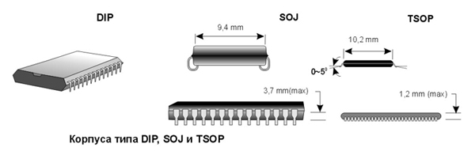
Подавляющее большинство производителей придерживается стандартной маркировки. Имея некоторое представление об этой маркировке, почти всегда можно с высокой долей достоверности определить тип чипа, не прибегая к справочникам. Тем не менее, некоторая справочная информация совершенно необходима.
В таблице ниже приведены некоторые обозначения, применяемые основными производителями чипов памяти.
| Фирма | Страна | Логотип | Код | Async | Sync | EDO | Стандарт |
|---|---|---|---|---|---|---|---|
| Alliance | США | AS | 4C | - | 5 | да | |
| Fujitsu | Япония | F в "скобках" cверху и снизу | MB | 81 | 811 | 5 | да |
| Goldstar (теперь LG) | Корея | LGS | GM | 71 | 72 | 3 | да |
| Hitachi | Япония, Корея, Малайзия, США | HM | 51 | 52 | 5 | да | |
| Hyundai | Корея | 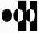 | HY | 51 | 57 | 4 | да |
| IBM | США | IBM | - | - | 03 | - | да |
| Micron | США | - | mT | 4C | 48 | разные | нет |
| Mitsubishi | Япония | M5M | 4 | 4...S | 5 | да | |
| Motorola | США | MСM | - | - | - | - | |
| NEC | Япония, Сингапур, Китай | NEC | mPD | 42 | 45 | 5 | да |
| NPNX | Япония | NPNX | NN | 51 | - | 5 | да |
| OKI | Япония | OKI | MSM | 51 | - | 5 | да |
| Panasonic | Япония | Panasonic | MN | 41 | - | 5 | да |
| Samsung | Корея, Португалия | SEC | KM | 4 | 4...S | 4 | нет |
| Siemens | Германия, Корея, Франция, Тайвань, Великобритания | Siemens | HYB | 5 или 3 | 39S | 5 | да |
| Texas Instruments | США, Япония | TI | TMS | 4 | 6 | 9 | да |
| Toshiba | Япония, Малайзия | TOSHIBA | TC | 51 | 59S | 5 | да |
| Vanguard | Тайвань | VG | 26 | 36 | 5 | да | |
| Vitelic | Тайвань | V | 53C | 54C3 | 5 | да |
Пример маркировки микросхемы фирмы Micron Tecnology.
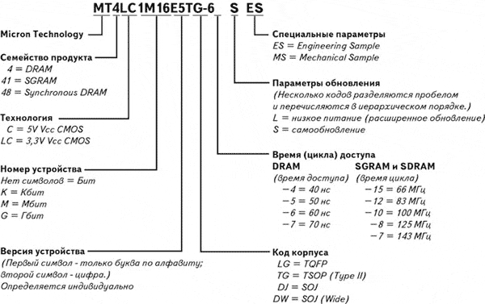
Этот пример дает достаточно развернутую информацию о расшифровке маркировок микросхем памяти, но этот пример 100% справедлив только для указанной фирмы.
Ниже приведены ещё примеры маркировок микросхем памяти. Также эти примеры показывают, как можно при минимуме справочной информации, путем логических заключений получить хоть немного информации о микросхемах памяти.
Перед нами чип с надписью: HM514400CS7
Заглянув в таблицу, обнаруживаем, что HM - маркировка, которую использует Hitachi. Убедившись, что картинка (лого) также принадлежит Hitachi, из той же таблицы видим, что 51 - это используемый Hitachi код для асинхронного DRAM. Т.е. перед нами чип FPM или EDO, но не SDRAM, так как SDRAM - синхронная память (вспомните, как расшифровывается аббревиатура SDRAM). Перейдем к концу надписи. Последняя группа букв (здесь CS) практически всегда несет информацию о типе упаковки (буква S, как в данном случае, или нередко J означает, как правило, SOJ). Первая же буква в этой группе чаще всего относится к начальным буквам алфавита, ибо призвана обозначать ревизию (то есть порядковый номер по мере изменения) спецификации на данный продукт. В данном случае это ревизия C. Общего принципа для чтения информации в этой группе не существует, но она и не слишком важна (ревизия информативна только для очень продвинутых специалистов, а тип упаковки вы и так видите).
Последняя цифра 7. У других производителей на ее месте могла бы стоять одна из следующих групп символов: -7, 70, -70. Уже понятно, что речь идет о времени доступа, просто кое-то из производителей пишет его полностью, а другие отбрасывают один нуль. Как правило, это не вызывает проблем с определением времени доступа, поскольку характерные времена для асинхронного DRAM 50-150 нс. Казалось бы, есть риск перепутать старенький 100 нс чип, у которого отбросили один нуль, с современным 10 нс SDRAM, но есть еще огромное количество признаков (код продукта, упаковка, рабочее напряжение, время изготовления и т.д.), позволяющее отличить их друг от друга.
Наконец, осталась группа из 4 цифр в середине - 4400. Переводится она следующим образом:
а) Последний нуль с подавляющей вероятностью означает, что данный чип принадлежит к типу fast page. Для EDO практически все производители ставят на его месте другую цифру (обычно 5, см. таблицу). Если цифра, которую вы видите на этом месте, не является нулем и не совпадает с цифрой, декларированной производителем для EDO - вопрос требует дополнительного изучения. Это может быть как резервная цифра для того же fast page или EDO, так и указание на специальную архитектуру чипа .
б) Все нули, стоящие перед последней цифрой, можно игнорировать - они лишь заполняют свободное место, которое могло бы быть востребовано, если у чипов была бы другая организация.
в) Оставшиеся цифры в начале рассматриваемой группы - 44. В них закодирована сначала емкость чипа, а потом число линий ввода-вывода. В данном случае разделить эти два числа не составляет труда - емкость 4 мегабита, ширина шины 4. Путем несложного деления выясняем, что перед нами чип 1х4. Итак, изучение артикула показало, что перед нами чип Hitachi fast page DRAM 1x4 SOJ 70 нс.
Два резюме по этому поводу:
Общее - для того, чтобы выделить группу цифр, ответственную за организацию и тип чипа, нужно отбросить спереди буквенно/цифровой код производителя и класса продукции, а сзади - буквы, отвечающие за ревизию и упаковку, а также информацию о времени доступа.
Частное - для 4-мегабитных чипов эта группа цифр имеет длину 4.
Чип с лого в виде буквы F маркировка: MB8117405B-60
MB (как и логотип) дает нам Fujitsu. B-60 - ревизия и 60 нс. Такое время доступа (а также то, что перед нами SOJ) заставляют усомниться, что перед нами SDRAM. Следовательно, код продукта - 81. Нам остались цифры 17405.
Последняя пятерка, как согласно таблице, так и просто как правило, означает EDO, 0 перед ней отбрасываем. Емкость и ширина шины лежат в цифрах 174. Предположение, что емкость равна 1, дает нам весьма странную шину. Разделив эти цифры в другом месте, получаем 17 мегабит и 4 линии ввода-вывода. С линиями получше, но почему 17???
Ответ заключается в том, что шестнадцатимегабитные чипы имеют еще один параметр, который отличает один чип от другого и называется "глубина refresh". Вернее, этот параметр имеет любой чип, но только для шестнадцатимегабитных чипов чипы одной организации стали выпускаться с разными значениями этого параметра. Не вдаваясь в подробности, просто укажем, что у 16-мегабитных чипов число 16 в маркировке стали использовать для передачи этого параметра, так что бывшее 16 стало равняться:
(аналогично для 64-мегабитных чипов 64 может равняться и 65...)
Итак, 174 - это 16 мегабит на 4 линиях ввода вывода, т.е. чип 4х4 (причем 2k refresh). Чип Fujitsu, 60 нс EDO.
Отметим еще, что 16-мегабитные чипы имеют уже 5 цифр для передачи той информации, которая у 4-мегабитных умещалась в 4 цифрах.
Чип, маркированный Toshiba TC5118165BJ-60
TC - Toshiba, 51 - асинхронный DRAM, BJ - SOJ ревизия B (или что-то в этом роде - это наименее важно для нас), 60 нс. Остаток - 18165. Видим, что 5 - EDO, а 1816 - это 16 мегабит на шине 16, 1k refresh, то есть чип 1х16.
Чип SEC KM416C1204AJ-7
Смотрим в таблицу, видим Samsung, минус KM4, минус AJ-7, и осталось 16C1204. Что-то не так?
Если внимательно посмотреть в таблицу, то видно, что Samsung использует нестандартную маркировку. К счастью, она (относительно) легко читается. 4 в конце - это EDO, нуль можно все так же отбросить. Что означает двойка - мне неизвестно, похоже, придется отбросить и ее (что делать - нестандартный Samsung...). Оставшиеся 16C1 - это есть 1х16, где вместо х поставили C и поменяли местами множители. Так читается большинство маркировок Samsung.
У другого отщепенца - Micron - маркировка намного менее логична (вроде бы внутри одного класса чипов все примерно понятно, но разные классы маркируются по разному принципу, даже для EDO нет единой цифры), так что время доступа определяется без труда, а что касается остального - надо взять маркировки с сайта и учить наизусть
Еще несколько примеров:
OKI M5116405B-60
16405 дает нам 4х4 4k refresh EDO (отметим кстати, что OKI, как иногда и некоторые другие производители, опускает в данном случае две первые буквы маркировки)
LGS GM71C4403CJ60
Goldstar 60 нс. Первое C необходимо отбросить, ибо означает оно 5-вольтовость (3-вольтовый чип имел бы на этом месте букву V, другие производители, как правило, никак не маркируют 5-вольтовые чипы. 4403 - это 1х4 EDO.
TI TMS417809DZ-50
17809 - 2х8 2k refresh EDO
"Стилизованное H" HY51V65404 TC-60
Hyundai, низковольтный (V) TSOP (TC) с комбинацией 65404, что соответствует 64 мегабит на 4 линиях ввода-вывода (т.е. 16х4) EDO. Здесь 65 означает 4k refresh, 64 означало бы 8k.
До этого мы рассматривали с Вами только асинхронную память. Давайте разберемся немного с маркировкой SDRAM.
Пусть это будет NEC D4516821G5-A10-7JF
TSOP у NEC имеют трудночитаемый "конец" маркировки. Не всматриваясь в этот самый конец, отметим только, что время такта у этого чипа 10 нс (A10). Интересующая нас комбинация 16821 состоит из 16 (мегабит), 8 (шина) остальные же цифры нам придется проигнорировать, так как их значение не вполне ясно. Итак, это чип SDRAM 2х8.
Надо сразу заметить, что в маркировке SDRAM у всех производителей наблюдается наибольший разнобой, поэтому весьма рекомендуется справляться в databook. Наконец - невзирая на относительную стройность описанной системы, она абсолютно не является помехоустойчивой, а каждый производитель так и норовит внести побольше своих помех. Выше уже упоминалось некоторое отклонение Goldstar, отметим еще, что у TI для 16-мегабитных чипов 4k refresh 16 почему-то равняется 26. А, скажем, видео-SOJ 256х16 практически всеми маркируется как 426х (х - fast page или EDO), т.е. опять же 16 равняется 26. Особенно много разнообразия демонстрируется при маркировке SDRAM